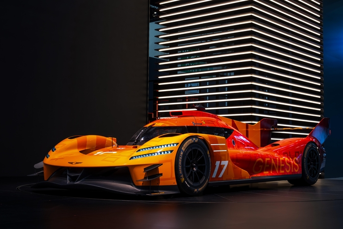

▲ 제네시스의 WEC 하이퍼카 GMR-001. 9월 4일 미국 오스틴에서 데뷔전을 치렀다 ⓒ 제네시스
제네시스의 WEC(FIA 세계내구선수권) 하이퍼카 GMR-001이 미국 무대에 처음 섰다. 9월 4일 텍사스 오스틴의 서킷 오브 디 아메리카스(COTA)에서 열린 2026 WEC 5라운드 '론스타 르망'이 그 무대다.
1. 시즌 전반의 성과 — 완주라는 기준
제네시스는 올해 WEC 하이퍼카 클래스에 진입한 신생 팀이다. 신생 팀에게 첫 시즌의 목표는 순위보다 완주다. GMR-001은 르망 24시간에서 1대가 체커기를 받았고, 상파울루 6시간에서는 두 대 모두 개러지 수리 없이 완주했다. 시즌 전반을 거치며 신뢰성이 올라왔다는 신호다.
2. 왜 미국 데뷔전이 중요한가

▲ 서킷 위의 제네시스(참고 이미지). 브랜드는 럭셔리에서 고성능 영역으로 외연을 넓히고 있다 ⓒ CarPrism
미국은 제네시스에 전략적으로 가장 중요한 시장이다. 브랜드 인지도를 럭셔리에서 고성능으로 확장하려면 미국 소비자에게 보여줄 무대가 필요하다. 저스틴 테일러 수석 엔지니어는 "제네시스 소비자들에게 브랜드가 퍼포먼스 영역에서 강해지고 있다는 것을 보여주고 싶다"고 밝혔다.
3. 모터스포츠 프로그램의 위치

▲ 제네시스 G70(참고 이미지). 브랜드의 고성능 라인업과 모터스포츠 프로그램은 연결돼 있다 ⓒ CarPrism
완성차 브랜드가 WEC 하이퍼카 클래스에 참가하는 이유는 단순한 홍보를 넘어선다. 24시간을 견디는 내구 레이스는 파워트레인과 제동, 전자 제어의 신뢰성을 극한에서 검증하는 시험대다. 여기서 쌓인 데이터는 양산 고성능 모델 개발로 이어진다.
참고 이 기사는 대회 진행 시점에 작성됐다. 최종 순위와 결과는 대회 종료 후 공식 발표를 확인해야 한다.
4. 정리

▲ 제네시스 G90(참고 이미지). 모터스포츠 성과는 브랜드 이미지 확장의 발판이 된다 ⓒ CarPrism
체크포인트
- GMR-001이 COTA에서 미국 데뷔전을 치렀다.
- 르망 24시간 1대 완주, 상파울루 6시간 2대 무결점 완주로 신뢰성이 올라왔다.
- 팀 목표는 두 대 모두 톱10이다.